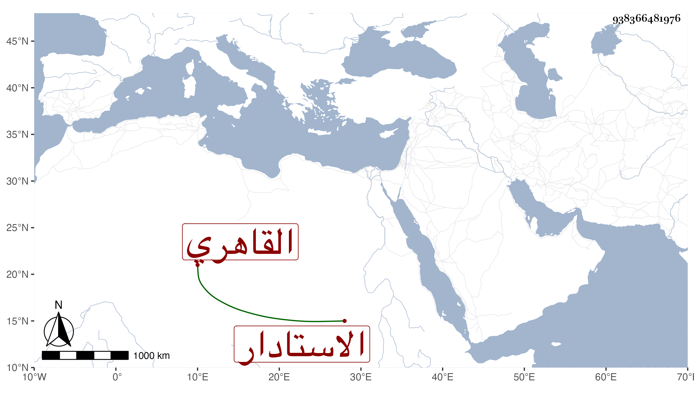

0902Sakhawi.DawLamic.ITO20230111-ara1.EIS1600.938366481976
Biography ID: 938366481976
689
أحمد بن يوسف بن أحمد الشهاب بن الجمال الاستادار التتري الأصل القاهري عوقب مع الرابية وأتباعه ثم قتل في ربيع الآخر سنة أربع عشرة وكان قد جهزه أبوه أمير الحاج في سنة إحدى عشرة على وجه يفوق الوصف وعاد في أول التي تليها ، ويقال إنه مبدع الجمال بحيث امتحن أعجمي به ولكنه كان يقنع بالنظر وذهب في خدمته في الحجة المشار إليها ماشيا وكان أبوه يعلم ذلك إلا إنه لعلمه بعدم شيء زائد على هذا لم يزبره .
